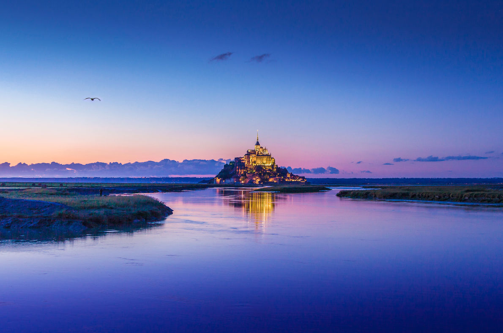
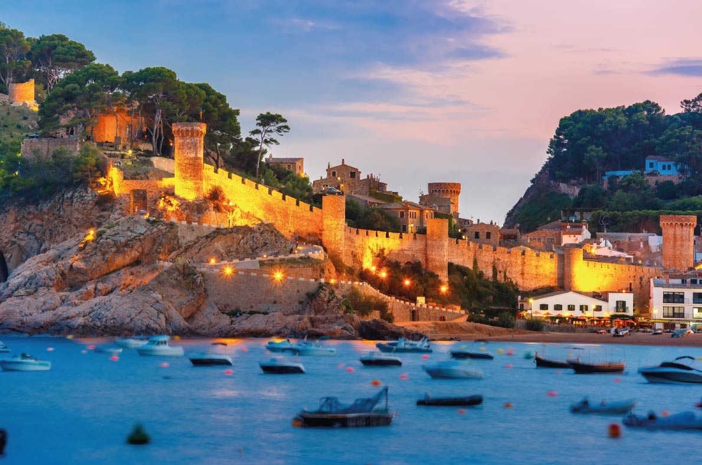
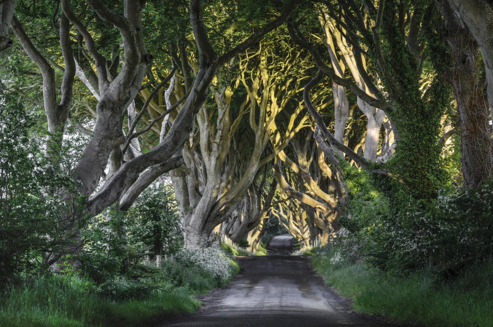
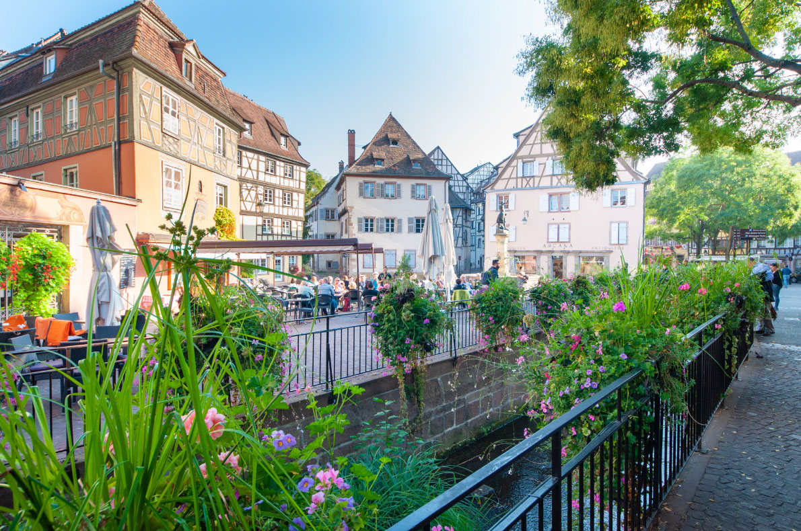

Eltz Castle has belonged to the same family since the 12th century, which is very
rare in Europe.The castle is fabulous! It has never been destroyed.Book your flights
to Frankfurt, Cologne or Bonn, the three closest airports and visit the Eltz Castle.
This medieval castle seems to come out of a children's storybook.If you want an
accommodation near the castle we recommend the "Hotel Villa Vinum Cochem",located 13
km from Eltz Castle;it offers direct views on the River Moselle.

2. Mont-Saint-Michel,France
Mont-Saint-Michel makes travellers from around the world dream.Come to Normandy
and discover this unique site.Book your hotel, guesthouse or appartment at Mont
Saint Michel or near the bay and book a Mont Saint Michel guided tour or even better,
treat yourself to a visit of Mont Saint Michel and castles of the region.We have
selected for you the best activities and tours in Normandy.

3. Tossa de Mar,Spain
Blue sky, blue sea and fine sand are awaiting you! Tossa de Mar is magical Its forest
very near the sea and medieval walls are a magical setting for a perfect holiday in Europe.
Book your plane tickets and your hotel, apartment, guesthouse at the best price guaranteed
in Tossa de Mar and your best activities and tours in Catalonia to make the most of your
holiday in one of the most magical places in Europe.

4. Dark Hedges,Ireland
Dark Hedges is a fascinating place! It became very popular after the series
"Game of Thrones" was shot. This beautiful tree lane is an ideal setting for
photographers or for nature lovers.Do not be scared, this forest is safe and
the area is so charming!Book your flights to Dublin or Belfast, your accommo
-dation at the best price and your guided tours such as "a full day guided tour
to explore all the exciting places featured in "Game of Thrones ".

5. Colmar,France
Colmar is a fairytale destination for young and old; you can visit it at any time of the year. Colmar
is a magical place in winter: its traditional Christmas market has been rewarded for the beauty of its
Christmas lights. Colmar also celebrates spring; come and visit its many spring markets. In summer enjoy
a cruise on the river in the mild and sunny climate of Colmar or a nice Alsatian white wine on a terrace.